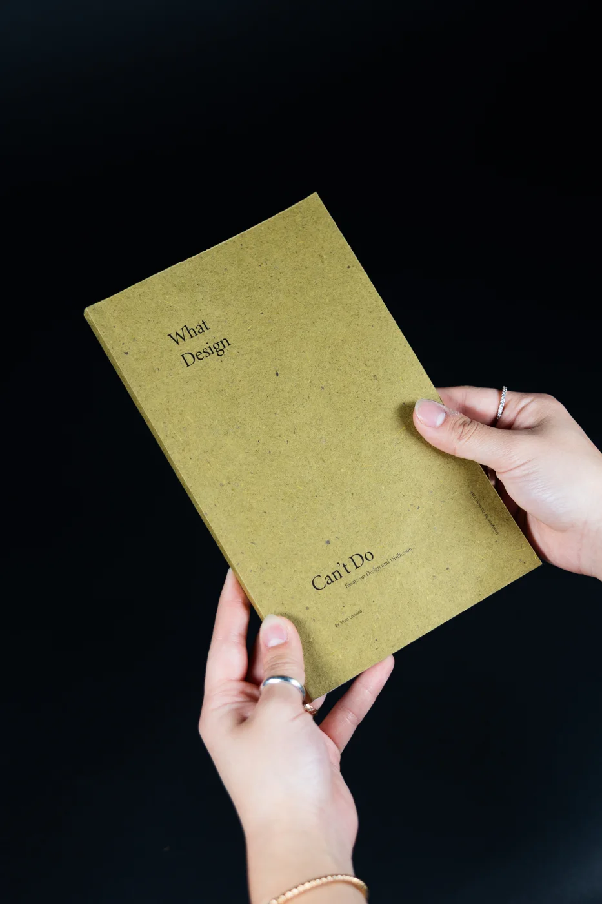
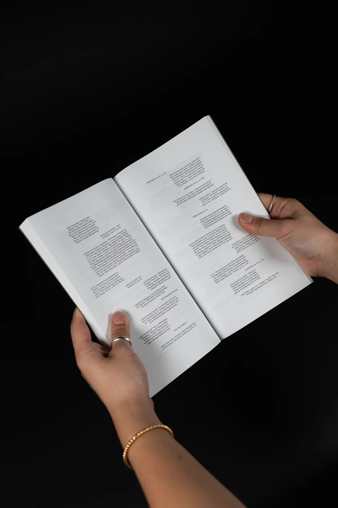
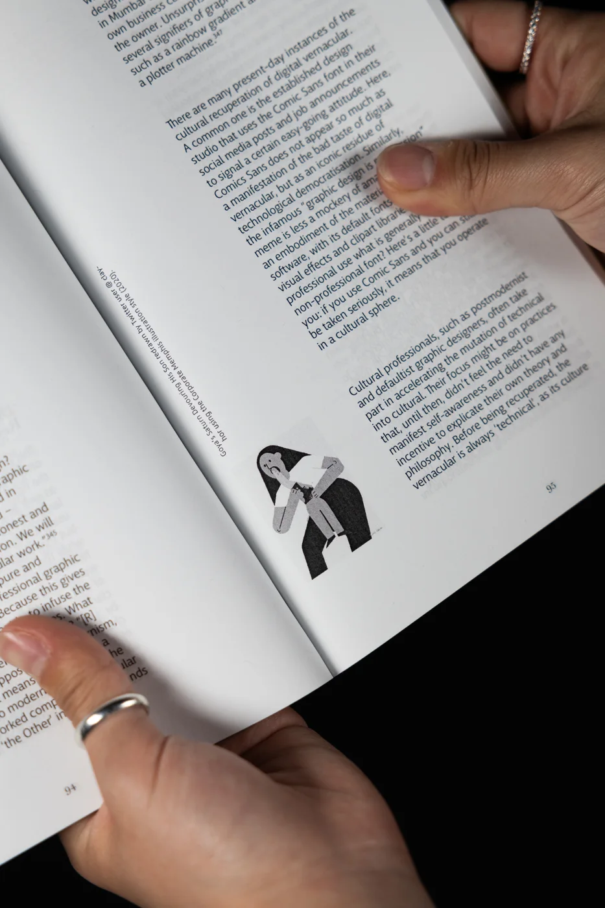

What Design Can’t Do
A book I typeset and bound by hand: Silvio Lorusso’s essays, given a new layout, a three-typeface system, and a perfect binding.

- Role
- Editorial design, typesetting, bookbinding
- Duration
- 3 weeks
- Team
- Solo, RISD typography course
- Tools
- Adobe InDesign, perfect binding
Text: What Design Can’t Do by Silvio Lorusso (CC BY-NC-SA 4.0), used with the author’s permission for this course. The words are his; the layout, typography, and binding are mine.
01 The brief
Start from a manuscript with no design at all.
The text arrived stripped of its original layout: one plain file per chapter, a folder of images whose names said nothing about where they belonged, and a list of captions. Everything else was up to me; organizing the text, building the hierarchy, placing the images, and fitting captions and footnotes into one system.
Starting from nothing meant every decision on the page had to be one I could explain.

02 Type system
Three typefaces, one job each.
Each level of the hierarchy gets its own typeface, so a reader always knows where they are without extra rules or color:
- Macha for the body text, the part people spend the most time in.
- Miller Banner for the running heads, the chapter name at the top of each page.
- Minion Variable Concept for the chapter titles, like “On Ornamental Politics and Identity as a Skill.”

03 The page
Calm to read, fun in the margins.
The main text is set for a calm, steady read. The small things are where the book gets to play: captions and annotations turn on their side and sit beside the images, so they feel like notes in the margin instead of interruptions.
That split was the goal of the whole system; keep the essays easy to read, and let the details carry the personality.

04 Binding
Learning to make the object, not just the file.
This was the project where I learned Adobe InDesign and how to perfect bind a book. Holding the printed pages changed how I judged them; margins, the gutter, and how far a spread opens only really show up once the book is in your hands.
05 Takeaway
Where it succeeds: a long read that stays calm.
A book is an interface you hold. Giving each typeface a single job kept the hierarchy clear enough to read for pages at a time, and moving the playfulness into the margins let the design have a voice without getting in the way of someone else’s words.
What worked
One typeface per level of hierarchy, so structure reads without extra decoration.
What I learned
Adobe InDesign and perfect binding, in three weeks.
Credit
Text by Silvio Lorusso. Images in the book are credited in their captions.